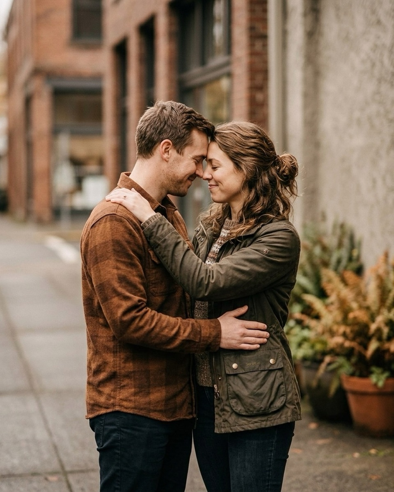
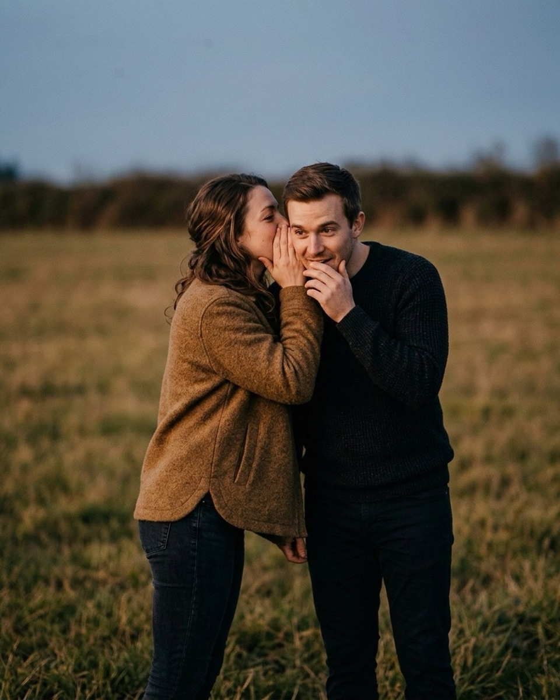

What to say when a couple goes stiff
The exact words that get a stiff couple touching, talking, and laughing again — every prompt copied straight from the Prompted catalog.
Stiffness isn't a posture problem. It's fear of being looked at — two people who are perfectly comfortable with each other in private, suddenly aware of a lens, and unsure what their own hands are supposed to be doing. Telling a couple to relax does almost nothing, because relaxed isn't a pose, it's an absence, and a camera can't be aimed at an absence. What actually works is smaller: give them a task. Not "be natural together," which asks them to perform a feeling, but "walk toward me," or "trade jackets," or "tell them about the first time you met" — a specific, finite thing to do. A task occupies the part of the brain that was spiraling about the lens, and because it's concrete, it produces a concrete, photographable shape instead of a strained, camera-ready face. Every prompt below is copied word for word from the Prompted catalog, sorted by the kind of stiffness it solves, from the first frozen minute to the last unguarded frame. The reference photos here are AI-generated, not real session frames — real galleries are being added through the contributor program as photographers submit their own work.

The first ninety seconds
The first minute of a couples session is the worst minute of the whole shoot. They've just watched you frame up a shot, they can feel themselves being arranged like furniture, and their first instinct is almost always to ask, out loud or with their eyes, "what do we do with our hands?" The fix is to answer that question before they get the chance to ask it — hand them something to do, not something to feel, and do it before you've even lifted the camera to your eye.
It's okay to feel silly. Silly photographs beautifully.
Nervous clientFrom the pose “Walking hand in hand”
Say this the moment you see a stiff, camera-ready smile creep onto either face, before you've even started shooting. Naming the awkwardness out loud, instead of pretending it isn't there, is usually enough to make it evaporate on its own.
You two just talk. I'm not even listening, I promise.
Nervous clientFrom the pose “Look back over shoulder”
Use it right after you've physically positioned the couple — the instant they're standing where you want them, give them a reason not to look at your lens. Then actually step back farther than feels natural and shoot from there.
I'll count to three, but nothing happens on three. Just breathe.
Nervous clientFrom the pose “Back to back”
Good for a couple who is visibly bracing for a countdown-triggered pose, shoulders already climbing toward their ears. The count becomes a small joke instead of a cue, and you shoot on two, or on the exhale that follows three, whichever comes first.
Get them touching without saying "touch"
"Touch each other" is an instruction with no object in it — it makes people freeze while they try to guess where, and guessing wrong in front of a camera is exactly the kind of thing a stiff couple is afraid of. Point at a specific body part instead, or hand them a task that requires touch only as a side effect of doing it. Foreheads, hands, jackets, and a shared walk do the same job as "get close," without ever asking for closeness directly, which is why they work on people who'd otherwise flinch at the word.

Don't worry about your smile. Look at them and it'll happen on its own.
Nervous clientFrom the pose “Forehead lean”
Use this as you're bringing their foreheads together and the gap between their faces is still a few inches wide. It solves the fear of a bad smile and the awkward closing distance in one line, without mentioning either problem by name.
We can take this as slow as you want. Start by just holding hands.
Nervous clientFrom the pose “Bench snuggle”
Say it before you've asked the couple for anything else, especially with a pair who told you beforehand they're "not really PDA people." Hand-holding is the lowest-stakes touch there is, and once it's happened the rest of the pose tends to build itself.
Let your hands find each other without looking down.
CalmFrom the pose “Jacket drape”
Use this once a jacket or coat is already draped between them. It directs both sets of hands toward the shared seam of fabric without naming the gesture out loud, which keeps their eyes up on each other instead of down at their own fingers.
Lean into them the way you do on the couch at home.
Nervous clientFrom the pose “Walking hand in hand field”
Say it mid-stride, once the couple has settled into a walking rhythm and their arms are already linked. It translates an abstract posing direction into a physical memory they already own, which is far easier to execute than any verbal description of weight or angle could be.
Every prompt in that section is doing the same trick: it names an action, never a feeling. Nobody has to figure out what "romantic" is supposed to look like on their own face in real time. They just have to hold a jacket seam, or lean the way they lean on an ordinary Tuesday night, and the camera does the rest of the work. It's the same logic behind the twenty lines in what to say to get natural smiles at a family session — a concrete task beats an abstract mood at any subject count, whether you're posing two people or twelve.
Want the fall mini session shot list?
About 25 poses grouped by family size, each with the words to say. Free PDF.
One email to confirm, one with the PDF. Unsubscribe any time.
When one of them is the nervous one
Couples are rarely stiff in the same way at the same time. Almost always, one partner is loose and half-mugging for the camera while the other is rigid, hyper-aware, and one wrong instruction from apologizing for their own face. Directing them identically only widens that gap. Give the nervous partner a job that has nothing to do with posing correctly, and let the relaxed partner's ease carry the rest of the frame.

Close your eyes. When you open them, just find each other.
Nervous clientFrom the pose “Lap sit laugh”
Use this on the partner who keeps sneaking glances at the camera mid-pose, checking to see if they're doing it right. Closing their eyes removes the option to check on you entirely, and the moment they open them again is almost always unguarded and worth the shutter click.
If it feels awkward, laugh about it. That's the shot.
Nervous clientFrom the pose “Whispered secret”
Say this to the couple as a pair, once you notice one of them fighting off a nervous laugh instead of letting it happen. Permission to laugh is often the whole fix — the laugh they were trying to suppress reads better on film than the smile they were forcing in its place.
If you don't know what to do with your face, kiss their shoulder.
Nervous clientFrom the pose “Run and catch”
A direct fallback for the partner who freezes the second a clear instruction runs out. It hides the face that's still struggling for an expression and puts the reacting partner's face front and center in the frame instead, where it reads far more naturally.
The words that make them laugh
A real laugh unlocks a stiff couple faster than any amount of reassurance ever will, because the muscles around a genuine laugh can't be faked the way a smile can. These lines aren't jokes so much as they are small dares — something silly enough that either pulling it off, or failing at it in front of each other, produces an honest, unrehearsed reaction on both faces at once.
Give me your best impression of each other.
PlayfulFrom the pose “Look back over shoulder”
Use it once a couple has loosened up slightly and you want a bigger, louder reaction than what you've gotten so far. Whoever goes first almost always breaks the other one's composure completely, which is the whole point of asking.
Five seconds of tickling starts... now.
PlayfulFrom the pose “Spin out twirl”
A good mid-session reset when energy is flagging and the poses are starting to feel like homework. Count the five seconds out loud yourself — the countdown builds the anticipation that makes the reaction land bigger than the tickling itself.
Try to make each other laugh without touching. Loser buys dinner.
PlayfulFrom the pose “Wall lean”
Use this with a couple who is visibly competitive with each other — the stakes of "losing" get them fully invested in winning a silly game, instead of half-invested in holding a pose they don't fully understand.
The last frame
Save the quietest prompts for the very end of the session, once a couple has spent thirty minutes learning that nothing bad happens when a camera is pointed at them. The last few frames of almost any shoot are the loosest of the whole set, because the fear that started the session has had nothing left to attach itself to for a while now.

Look at their lips, then their eyes. Take your time.
RomanticFrom the pose “Dip kiss”
Say this slowly, and actually mean the pacing of it yourself. A deliberately slow instruction gives a couple permission to move slowly too, instead of rushing through the moment to get it "over with" before the awkwardness comes back.
Kiss their forehead and keep your eyes closed after.
RomanticFrom the pose “Hand kiss”
Use it as one of your final few frames of the session. The instruction to keep the eyes closed after the kiss buys you an extra second or two of a genuinely unguarded expression, right when a couple is most tempted to glance back at your lens.
Think about tomorrow morning, nothing else.
CalmFrom the pose “Silhouette kiss”
A quiet closer for backlit or silhouette setups where fine facial expression barely registers against the light anyway. The instruction shapes posture and breathing more than it shapes the face, which is exactly what a silhouette needs from its subjects.
Never say "relax," "natural," or "act natural"
All three phrases are instructions with nothing underneath them. "Relax" describes an internal state you cannot direct a stranger into on command — try relaxing right now because someone just told you to, and notice it does roughly the opposite. "Natural" and "act natural" are worse, because they ask a person to perform the absence of performance, a contradiction most people sense immediately and then freeze trying to solve. None of the prompts above use any of those three words, on purpose. Every one names a hand, a breath, a direction to look, a sentence to say out loud — something an actual body can do, rather than a state it's supposed to arrive at by wishing. If you catch yourself reaching for "just relax" mid-session, stop and ask what you actually want their hands, eyes, or weight to be doing, and say that instead. It's the entire difference between a couple who looks stiff and one who looks like they forgot a camera was there. For the same approach applied to the walk up the aisle, see engagement session scripts, and for the light that makes it easier to shoot, golden hour prompts. Posing more than two people that day? Posing a family of five without it falling apart covers the same task-over-feeling approach at a harder subject count.
The Fall Mini Session Shot List
About 25 poses grouped by family size, each with the words to say. A free PDF, sent once you confirm your address.
One email to confirm, one with the PDF. Unsubscribe any time. No selling, no sharing.
Every prompt in this guide is in the app, with the pose it belongs to.
Prompted is the posing app that is only a posing app: 250+ poses, each with word-for-word prompts in four tones, filtered to the light you're standing in. The sun tracker is free forever.
Get Prompted on the App Store